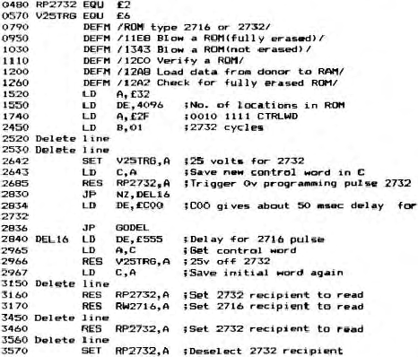

Micropower |
Volume 2 · Number 4 · September 1982 |
| Page 29 of 36 |
|---|
NB. Bit 7 of the control word is used by the software only. When it is set, 2716 EPROMS are in use, when reset, 2732 EPROM are present. Bit 7 is called TBIT.
Now the listing alterations needed to work your board. I use the original line numbers, like BASIC, to insert extra lines where needed. Even without an assembler you should be able to follow the few changes needed and alter your code accordingly. If not, send me the original cassette and stamps, I will re-record it for you. I hope that this does not upset anybody as you can not be altering a board you do not have and I am not quite copying the original software.

It takes about four minutes to blow a 2732. I have burned eight 2732 EPROMs from RAM and copied the eight again. I have had no errors. I am really pleased at having saved my school the cost of two £40 EPROM boards and a £60 EPROM burner, at the expense of two 1 Meg resistors. Not bad eh! Incidently Mr. Boyd, how can I piggy-back another 4 banks of EPROM on top of my present four to give eight banks of 8K plus BASIC? I am serious, it would really be useful to us. Oh, and if you are ever in the
| Page 29 of 36 |
|---|